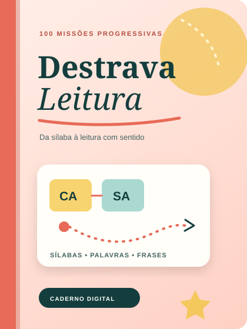
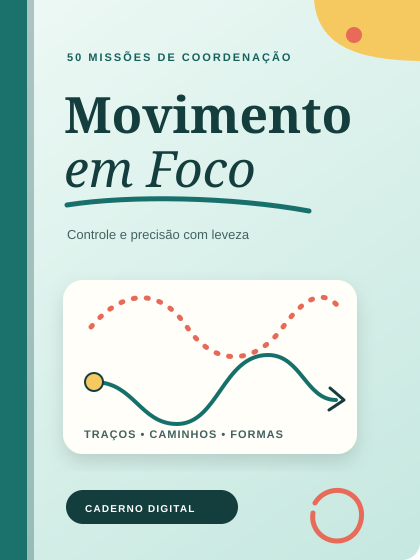
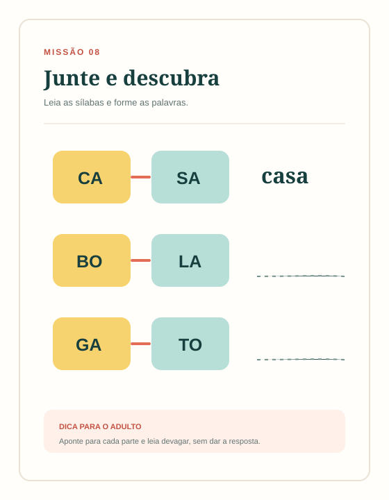
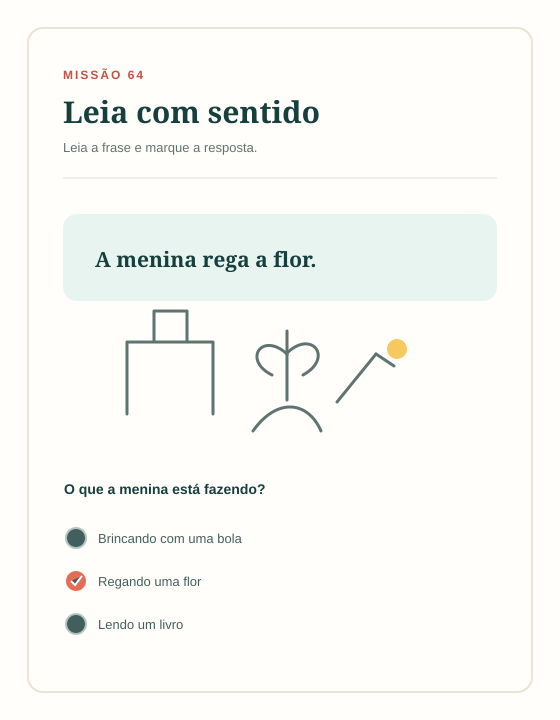
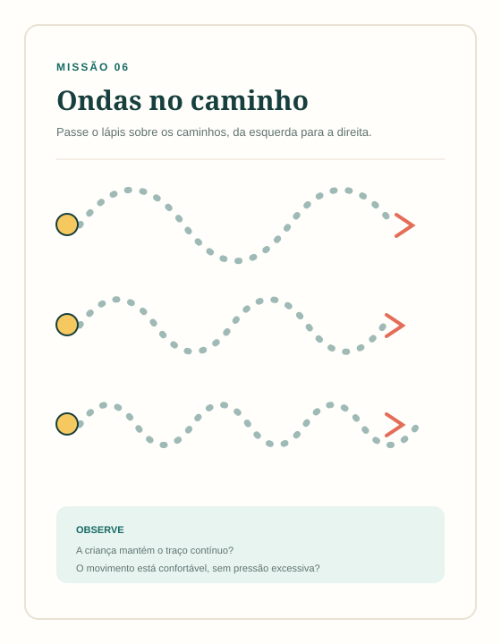
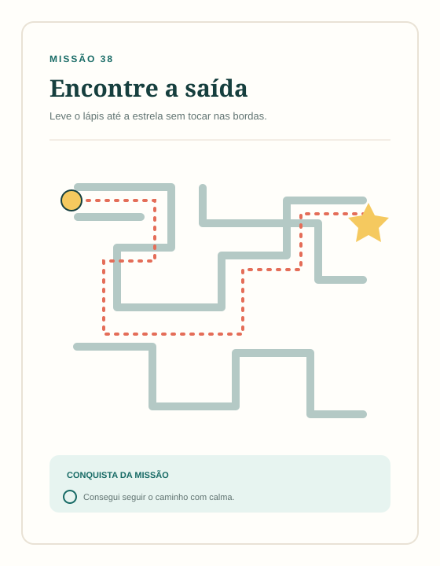

Sequência que faz sentido
Do mais simples ao mais desafiador, sem pular etapas importantes.
Para famílias, professoras e reforço escolar
Leitura e coordenação motora em uma sequência clara, bonita e fácil de aplicar — sem precisar procurar folhas soltas todos os dias.


Menos improviso, mais clareza
Quando a criança trava para juntar sílabas, se cansa com o lápis ou perde o interesse rápido, insistir em atividades aleatórias costuma aumentar a frustração.
Os cadernos Primeiros Passos organizam a prática em pequenas missões, com começo, evolução e conquista. O adulto sabe o que propor; a criança percebe que está avançando.
Do mais simples ao mais desafiador, sem pular etapas importantes.
Atividades pensadas para rotinas de 10 a 15 minutos, respeitando o ritmo.
Trilhas, checklists, registros e certificados ajudam a enxergar cada conquista.
Escolha pelo estágio da criança
Materiais independentes que também se complementam no combo.
Leitura e alfabetização inicial
Da sílaba à leitura com sentido, em atividades curtas e organizadas.
Para crianças que já reconhecem letras ou alguns sons, mas ainda travam ao juntar sílabas, formar palavras e compreender pequenas leituras.
Coordenação motora e grafomotricidade
Traços, caminhos, formas e desenhos para desenvolver controle e precisão com leveza.
Para crianças de 4 a 7 anos que estão construindo controle do lápis, direção, continuidade, precisão e autonomia antes e durante a escrita.
Por dentro dos cadernos
Exemplos visuais da progressão presente nos materiais.


A dificuldade cresce aos poucos: sílabas, palavras, frases, textos e fluência.


Aquecimento, caminhos, padrões, desenho e autonomia em uma sequência leve.
As imagens acima são representações visuais das habilidades trabalhadas. A diagramação pode variar no arquivo final.
Muito além das atividades
100 atividades + 3 bônus
50 atividades + 3 bônus
Simples de começar
Você escolhe as páginas de acordo com o estágio da criança e conduz a prática no ritmo dela.
Leitura, coordenação motora ou os dois no combo.
O acesso é enviado após a confirmação do pagamento.
Use uma atividade por vez, em sessões curtas e positivas.
Acompanhe a evolução sem comparar a criança com outras.
Escolha a melhor opção
Pagamento único. Sem mensalidade.
Para avançar de sílabas a pequenos textos.
Leitura e coordenação motora em um só pacote.
A opção mais completa para famílias e educadoras.
Para desenvolver controle e precisão.
Compra protegida · acesso digital · pagamento processado em ambiente seguro
Você pode conhecer com tranquilidade
Acesse o material e veja se ele faz sentido para sua rotina. Se não for o que você esperava, solicite o reembolso dentro de 7 dias, conforme as condições informadas no checkout.
Perguntas frequentes
Ainda ficou alguma dúvida? Consulte também as informações exibidas no checkout antes da compra.
É um material digital em PDF. Nenhum produto físico será enviado. Você poderá baixar e imprimir as páginas que desejar.
Mais importante que uma idade rígida é o estágio da criança: ela deve reconhecer letras ou alguns sons e estar começando a unir sílabas, palavras e frases.
Foi estruturado principalmente para crianças de 4 a 7 anos que estão desenvolvendo habilidades grafomotoras, sempre respeitando o ritmo individual.
Não. Você pode imprimir apenas as páginas escolhidas para cada sessão. Isso facilita a rotina e evita sobrecarregar a criança.
Sim. A licença permite uso pessoal ou em uma única turma. Não é permitido revender, compartilhar o arquivo ou disponibilizá-lo em grupos.
Não. É um recurso pedagógico e não substitui avaliação ou acompanhamento de terapeuta ocupacional, psicopedagogo ou outro profissional de saúde.
Após a confirmação do pagamento, a plataforma de checkout enviará as instruções de acesso para o e-mail informado na compra.
Um passo de cada vez
Leve os dois cadernos, as 150 atividades e os 6 bônus no Combo Primeiros Passos.